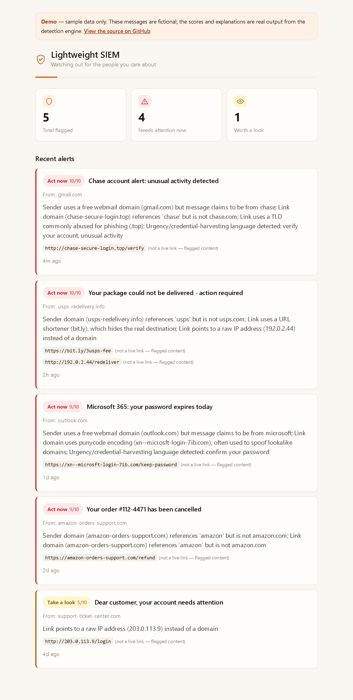
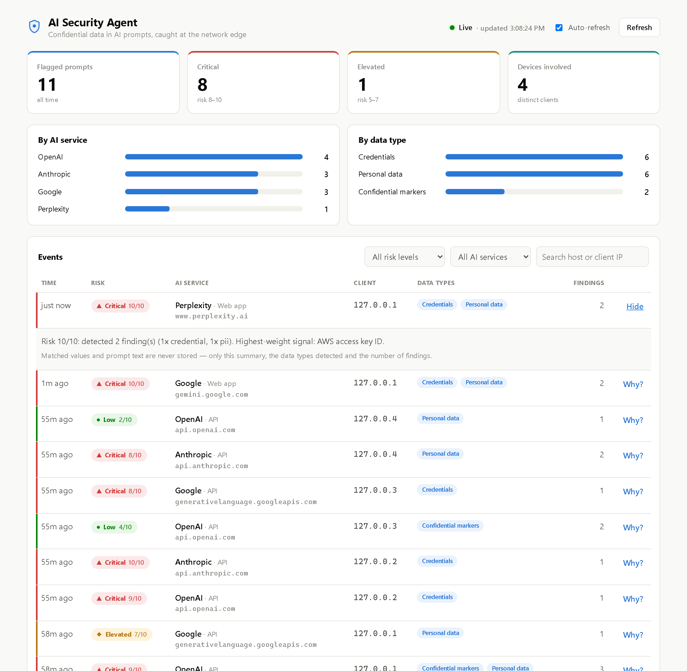

Cybersecurity Analyst
Alen Frashnishta
I triage threats, investigate incidents, and close the gaps attackers rely on — across 50+ client environments, every day.
- 5+years in security & IT
- 50+client environments
- 1,500+users trained
- M.S.Cybersecurity, NJIT
Get in touch
See my work
About
Cybersecurity Analyst supporting SOC operations, incident response, threat detection and vulnerability management at a managed service provider. Hands-on with SIEM monitoring, endpoint detection and response, and Zero Trust enforcement. My background also includes penetration testing program administration, phishing investigation with Microsoft Purview, vendor SOC 2 risk analysis, and security awareness training.
Outside of work I build security tooling and am growing a solo cybersecurity practice focused on small and mid-sized businesses.
Experience
- Triage alerts across 50+ multi-tenant client environments using Blumira, CrowdStrike Falcon, Huntress, Microsoft Defender and RocketCyber; lead end-to-end incident response.
- Administer penetration testing programs across SMB client sites with Vonahi vPenTest, coordinating remediation with client IT and producing executive-level reporting.
- Run internal, external and cloud vulnerability scans for 30+ companies with RapidFire Tools (VulScan, Network Detective Pro); prioritize by CVSS severity and asset criticality.
- Investigate phishing and perform tenant-wide email remediation with Microsoft Purview Compliance and Content Search across Microsoft 365.
- Perform quarterly vendor SOC 1 / SOC 2 reviews, documenting CUECs, CSOCs and auditor testing against the AICPA Trust Services Criteria.
- Investigate Living-off-the-Land (LOLBin) attack chains and respond to intrusions involving credential abuse, persistence and lateral movement, mapped to MITRE ATT&CK.
- Deliver security awareness and phishing-simulation training to 1,500+ end users.
- Implemented role-based access control (RBAC) to enforce least privilege across enterprise systems.
- Built and deployed a custom Docker container to standardize secure application environments across development and production.
- Managed support requests through Autotask and Zendesk, keeping operations running and tickets on time.
Projects

Working prototype · live demo · 2026
A subscription service for non-technical people — often parents and grandparents. It scans their email for phishing, scores every suspicious message from 1 to 10 with a plain-language explanation, and alerts a linked family member so they can step in before money or credentials are lost.
PythonFastAPISQLAlchemyReactTypeScriptViteOAuth 2.0
Read the case study →

Working prototype · 2026
Network-level data-loss prevention for AI usage. A TLS-inspecting proxy spots prompts headed to ChatGPT, Claude, Gemini and other AI services, scans them for secrets, credentials and personal data, and reports redacted findings to a SIEM-style admin dashboard.
PythonmitmproxyFastAPISQLAlchemypytest
Read the case study →
See all projects →
Skills
- SIEM & monitoring
- CrowdStrike Falcon · Huntress · Blumira · Microsoft Defender · RocketCyber · Datto EDR · Elastic SIEM · SaaS Alerts
- Vulnerability & pen testing
- Vonahi vPenTest · RapidFire VulScan · Network Detective Pro · Nmap · Shodan
- Endpoint & Zero Trust
- ThreatLocker · Datto RMM · Kaseya VSA
- Network & firewall
- FortiGate · SonicWall · Policy management · VLAN segmentation
- Identity & access
- Active Directory · Microsoft Entra ID · Hybrid AD · RBAC · MFA
- Cloud & infrastructure
- AWS · Azure · Virtual machines · Docker
- Email security & eDiscovery
- Microsoft Purview · Phishing analysis · Email remediation
- Frameworks & compliance
- NIST CSF · NIST 800-171 · MITRE ATT&CK · CIS Controls · SOC 2 · HIPAA
- Incident response
- Triage · Containment · Eradication · Recovery · Order of volatility
- Scripting & automation
- PowerShell · Python · Bash · Windows CLI
Credentials
Certifications
- CompTIA CySA+June 2026
- CompTIA Security+July 2024
- Certified Cyber Hero — ThreatLockerMarch 2026
- Certificate in Network Security & Information Assurance — Ying Wu College of ComputingMay 2023
Education
- M.S. in Cybersecurity — New Jersey Institute of TechnologySep 2022 – Dec 2024